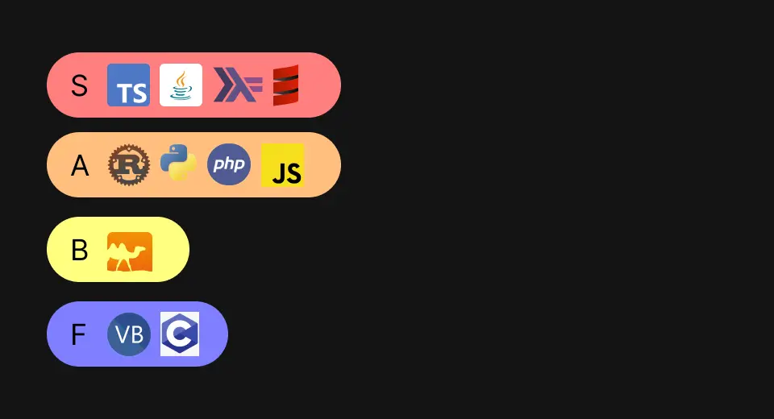
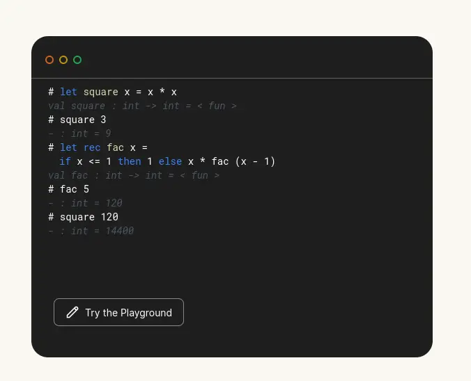

<!DOCTYPE html>
<html lang="en">
  <head>
    <meta charset="UTF-8" />
    <meta name="viewport" content="width=device-width, initial-scale=1.0" />
    <meta name="description" content="Explore by reading..." />
    <meta name="application-name" content="lash (personal)" />
    <meta name="keywords" content="blog article, ph blog, eyelash, lash" />
    <meta name="referrer" content="origin-when-cross-origin" />
    <meta name="creator" content="unknown" />
    <link rel="canonical" href="https://lashmono.space" />
    <link
      rel="alternate"
      hreflang="en-US"
      href="https://lashmono.space/en-US"
    />
    <meta
      name="format-detection"
      content="telephone=no, address=no, email=no"
    />
    <meta property="og:title" content="My only reason to learn coding." />
    <meta property="og:description" content="Explore by reading..." />
    <meta property="og:url" content="https://lashmono.space" />
    <meta property="og:site_name" content="lash - stories" />
    <meta
      property="og:image"
      content="https://lashmono.space/async/prod/akame-seo-pt2.webp"
    />
    <meta property="og:image:width" content="1200" />
    <meta property="og:image:height" content="630" />
    <meta name="twitter:card" content="summary_large_image" />
    <meta name="twitter:title" content="My only reason to learn coding." />
    <meta name="twitter:description" content="Explore by reading..." />
    <meta
      name="twitter:image"
      content="https://lashmono.space/async/prod/akame-seo-pt2.webp"
    />
    <link rel="preconnect" href="https://fonts.googleapis.com" />
    <link rel="preconnect" href="https://fonts.gstatic.com" crossorigin />
    <link
      href="https://fonts.googleapis.com/css2?family=Outfit:wght@400;800&display=swap"
      rel="stylesheet"
    />
    <link
      rel="stylesheet"
      href="https://cdnjs.cloudflare.com/ajax/libs/font-awesome/6.4.2/css/all.min.css"
      integrity="sha512-z3gLpd7yknf1YoNbCzqRKc4qyor8gaKU1qmn+CShxbuBusANI9QpRohGBreCFkKxLhei6S9CQXFEbbKuqLg0DA=="
      crossorigin="anonymous"
      referrerpolicy="no-referrer"
    />
    <link
      href="https://unpkg.com/boxicons@2.1.4/css/boxicons.min.css"
      rel="stylesheet"
    />
    <link rel="stylesheet" type="text/css" href="../../src/mono/art.css" />
    <script src="../../_poly.js" type="module"></script>
    <title>My only reason to learn coding.</title>
  </head>
  <body>
    <div class="scrollbtn" id="scrollTop">
      <i class="fas fa-arrow-up"></i>
    </div>
    <header class="lash-nav-contain">
      <div class="lash-parent">
        <div class="lash-logo"></div>
        <div class="lash-toggle" id="colorToggle">
          <i class="fa-regular fa-sun"></i>
        </div>
      </div>
    </header>
    <aside class="article-banner">
      
    </aside>
    <main class="article-container">
      <aside class="article-parent">
        <article class="lash-article-body">
          <figure class="lash-min-read">7 min read</figure>
          <header class="lash-article-header">
            My only reason to learn coding
          </header>
          <figcaption>
            Finally, I've released this article today to tell my own personal
            space so congrats to me 🥰. Now, the date today is August 27 so
            after 5 years of exploring digital world now I have my ability to
            tell my stories so here it is.
          </figcaption>
          <figcaption>
            Wayback, 2018 my character couldn't understand that time cause I
            live in somewhat like childish and can't comprehend for having an
            empathy to his classmates at all.
          </figcaption>
          <figcaption>
            That time it was the moment when I gain an issue where I can't play
            the game (League of Legends) until it makes me mad because I can't
            access my garena there until I realized that the computer I use is
            frequently vulnerable I discovered there was shit application that
            records keyboard input or so-called KeyLogger.
          </figcaption>
          <figcaption>
            That time my Garena (such a dead platform 4 now I think?) doesn't
            have specific recovery option if I got some password problems so
            once if I do anything wrong then there's no way I can recover so it
            became to be true. Someone change the identity of my Garena account
            until he make me mad HAHAHA.
          </figcaption>
          <figcaption>
            On the following day, I do something like (hack that nigga) but not
            in keylogger way I do some bruteforcing to knowing their common
            password they generally used so it takes more than hours to expose
            the password until I get it afterall I do the same thing hehe
            meanwhile, their reaction which I suffer before it looks so similar
            but for them it makes them so bad like I'm gonna laugh because that
            time they are seriously questioned by the original owner which he
            used to play Garena (LoL) he can't blame me because he didn't know
            me either 😂
          </figcaption>
          <figcaption>
            I only have a phone in that time, that's the only way I can
            communicate with fucking strangers still shy to interact with my
            family that unders my bloodline so during my high school days I
            spend my whole time to resonate my remaining teenage days before I
            get into adultery life (I was telling my life before 18).
          </figcaption>
          <figcaption>
            During my high school life I really wanted to make someday a
            wonderful website that suits to my ethical needs I really dought
            very much that bugs is part of an eternity to exist that's the
            reason why I used to be an blackhat believer before. I always think
            for doing bad things like I want more money money money just like
            how I wanted to learn carding tricks I think this is reason why I
            became misogynist for some reason? I lose my confidence to
            understand every women due to my tragic past (still problem for now
            sorry).
          </figcaption>
          <figcaption>
            As a result to what I used to be I ended up to explore programming
            in 2019. I begin my exploritation to learn basic things like HTML
            and CSS whereas I have no idea about the reality of programming
            which might be a perfect regret where I should begin first to
            proceed in high-level languages like Python or Java whatever.
          </figcaption>
          <figcaption>
            My first lines of code is actually written in Python so basically I
            do some for loop string declaration that time in my favorite
            computer shop so yeah I'm not lying you hear it overthere I was
            actually a native computer shop enjoyer very well.
          </figcaption>
          <figcaption>
            I like it because I actually do some copy paste things until it
            works like what the hell it's cute aside from for loop string
            declaration I also do some print that string forever until the
            machine goes down 🤣
          </figcaption>
          <figcaption>
            So, uh let me share to you my experience that I achieve upon doing
            crazy things as a hobbyist tech guy.
          </figcaption>
          <picture>
            
            <span class="media-info"
              >My Tier Programming Languages (don't take it very much)</span
            >
          </picture>
          <figcaption>
            So, as you can see there are some languages that I never use and
            there was an horrible thing that I don't want to consider here's the
            whole thing:
          </figcaption>
          <figcaption>
            In my S-tier ranking there was TypeScript, Java, Haskell and Scala
            base on what I observed as follows:
            <ul>
              <li>
                For TypeScript, it is good to handle web things but I believe
                further you should not rely on this as a software principle I
                disagree on his flavors (this is my take don't take it
                seriously).
              </li>
              <li>
                For Java, I still admire about whole architecture still cannot
                understand why some of the senior devs still consider it as a
                horrible thing which totally I don't understand or maybe it was
                an unexpected but I love to work on it.
              </li>
              <li>
                Haskell, I put it there even if I had no experience (as of this
                date) I want to consider this in the future of my web-assembly
                if I had to work with my own web-engine games I will consider
                this because of the GHC WASM.
              </li>
              <li>
                Scala, I put it there because I want to work on this as a
                improvement for Java architecture especially, If I wanted to
                achieve the real-time operations in most of time I want to learn
                more about it after working in Springboot Projects hehe.
              </li>
            </ul>
          </figcaption>
          <figcaption>
            In my A-tier ranking this was my experience as follows:
            <ul>
              <li>
                Rust, in my first lines of code I swear the dynamical syntax I
                know this was actually an statically language but it seems to be
                questionable for me if I understand the memory allocations since
                this was prefferred by Discord as I know but uh I still
                wondering if this language could shape the linux kernel so after
                all still worth it to learn for this moment (so take it).
              </li>
              <li>
                Python, as I mentioned earlier this was my first love I mean
                this was my language that I learn before I proceed to HTML and
                CSS I didn't find some confidence to work here again because I
                don't have too.
              </li>
              <li>
                PHP, Oh god this was my special thing that I've experience so
                far in my journey as a web maker their Laravel framework it
                reminds me how the fucking NextJS could be my biggest mistake to
                work with as far as I can tell I don't want to use NextJS
                anymore if I choose this as primary rather than JavaScript for
                backend I'd rather to say that I didn't make mistake again to
                give some trust (it was a horrible experience to JS)
              </li>
              <li>
                JavaScript, for n00bs (oops, sorry u don't want me to say this)
                but it was literally shut the fuck-up that I experience after I
                realize the importance of Hypermedia Systems there are something
                that we might not need JS Framework to work with some dynamic
                features like data fetching, data caching and so for. because in
                general we can actually just achieve it with some AJAX
                operations just like how you can do with jQuery or HTMX rather.
              </li>
            </ul>
          </figcaption>
          <figcaption>
            You know if you're someone who takes JavaScript as a first ideal
            language to work with backend I'm begging you to apply only in some
            scenarios like making a statically-rendered page and simple data
            fetching don't use it for simulatenous operations like ChatBots,
            communicate with websocket wtf u should not. You could probably
            proceed with high-standard and high-level languages like PHP, Python
            or whatever just don't use JS believe me even if its hard to tell.
          </figcaption>
          <picture>
            
            <span class="media-info">Some syntax from the OCaml's webpage</span>
          </picture>
          <figcaption>
            In my B-tier ranking there was OCaml this is my replacement for Rust
            it was unexpected I only see this language thru my Twitter like what
            the fuck? I see this syntax is quite similar to Haskell I think? but
            I have no take this is actually a good one to replace my rust
            experience.
          </figcaption>
          <figcaption>
            In my F-tier ranking there was a VB.Net and C this is actually an
            awful to me because I have no future for this both despite the C is
            the mother of all languages then what? should I think more about
            this certainly not like hell bitch but then again I have no future
            for this that's it.
          </figcaption>
          <figcaption>
            Now, let's take to my reason why I learn coding not just because I
            want to embodied myself in just Security since this was my first and
            biggest deal for the whole career someday I really wanted to solve
            CTF challenges so that I consider myself as a whitehat now all of
            the sudden bridges that I learned from programming I should
            rightfully use it to expand my knowledge upon ethical hacking I'm
            done for doing bad things I forget about it but my character is
            forever be frosted as I am so thanks for my younger self you reflect me
            to deal with these things alone.
          </figcaption>
        </article>
      </aside>
      <footer class="after-reading">
        <figure>Enjoyed reading?</figure>
        <figcaption>
          Is it that so? you might not need to follow me on twitter stranger!
          just explore more articles here if you wanted to learn more things
          that I only know lol.
        </figcaption>
      </footer>
    </main>
    <script src="../separate.js"></script>
  </body>
</html>
